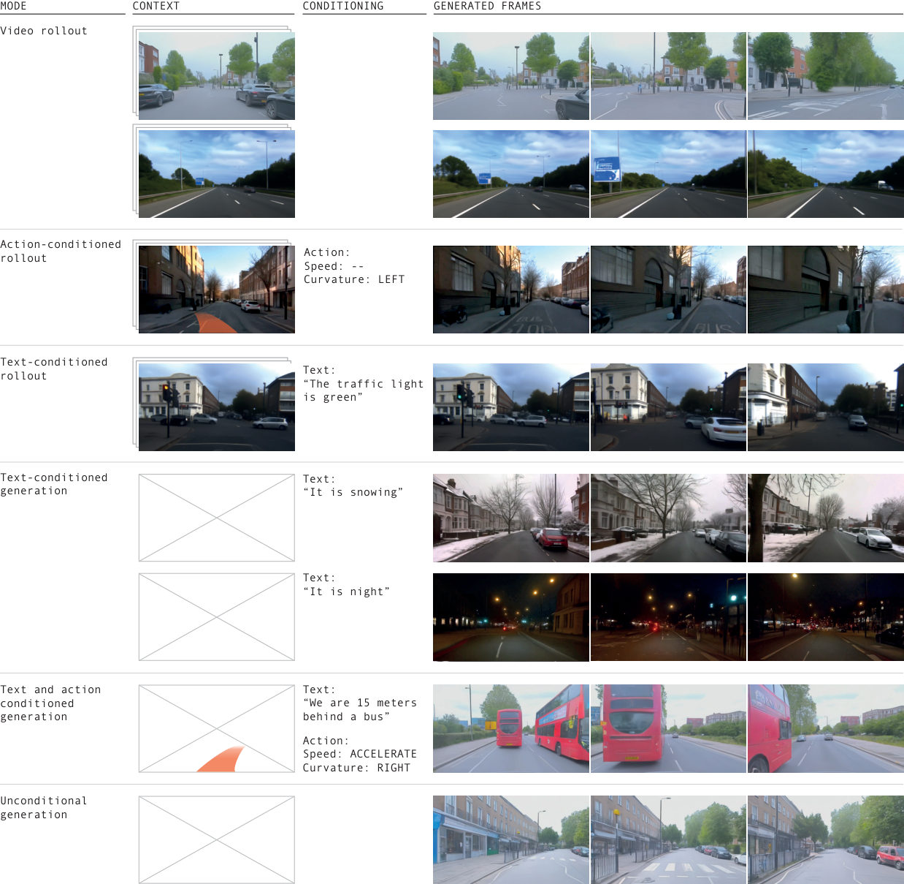
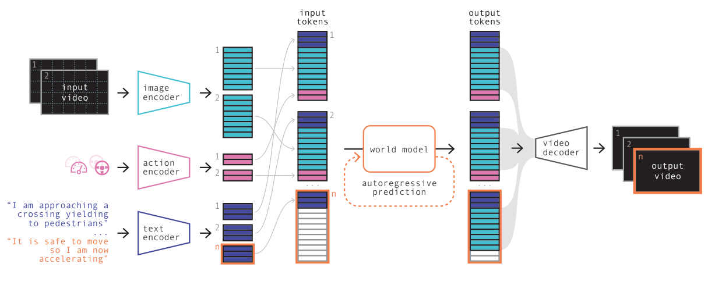
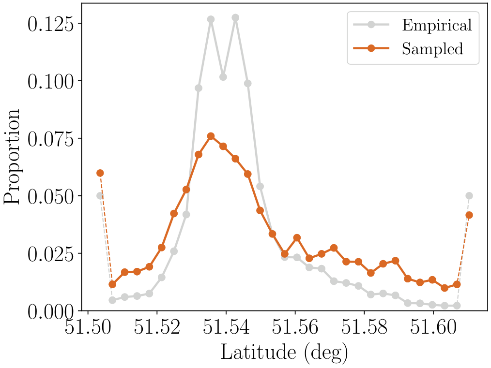
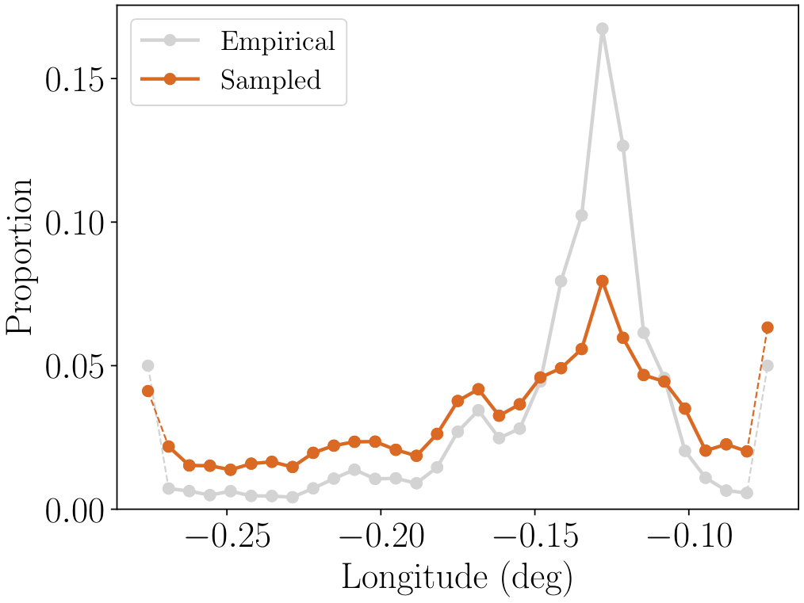
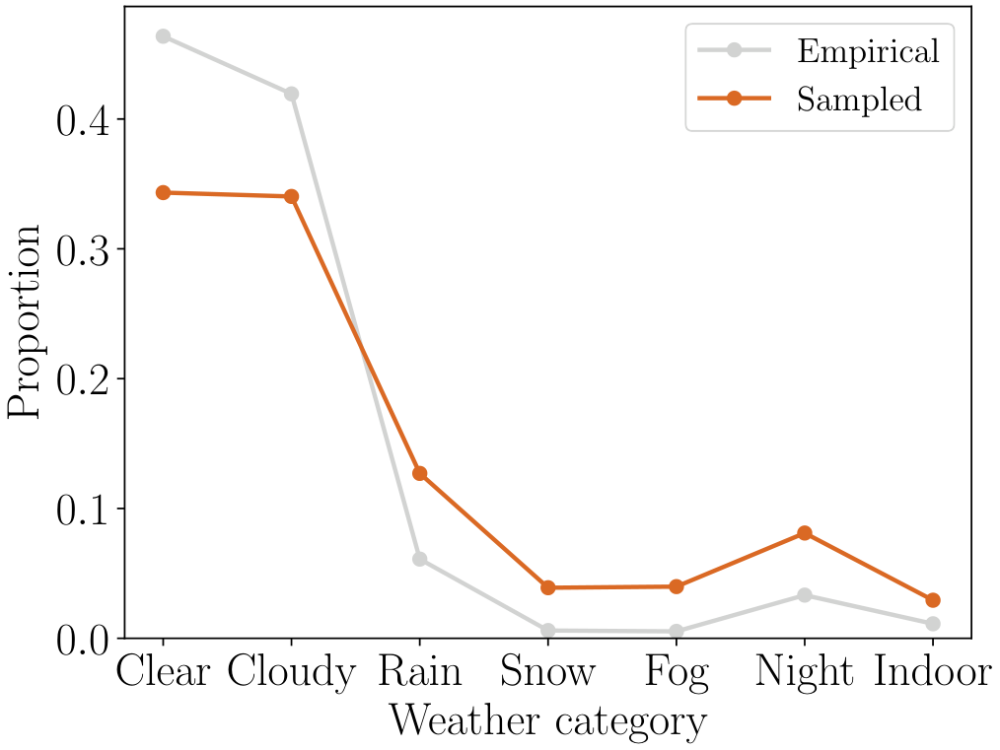
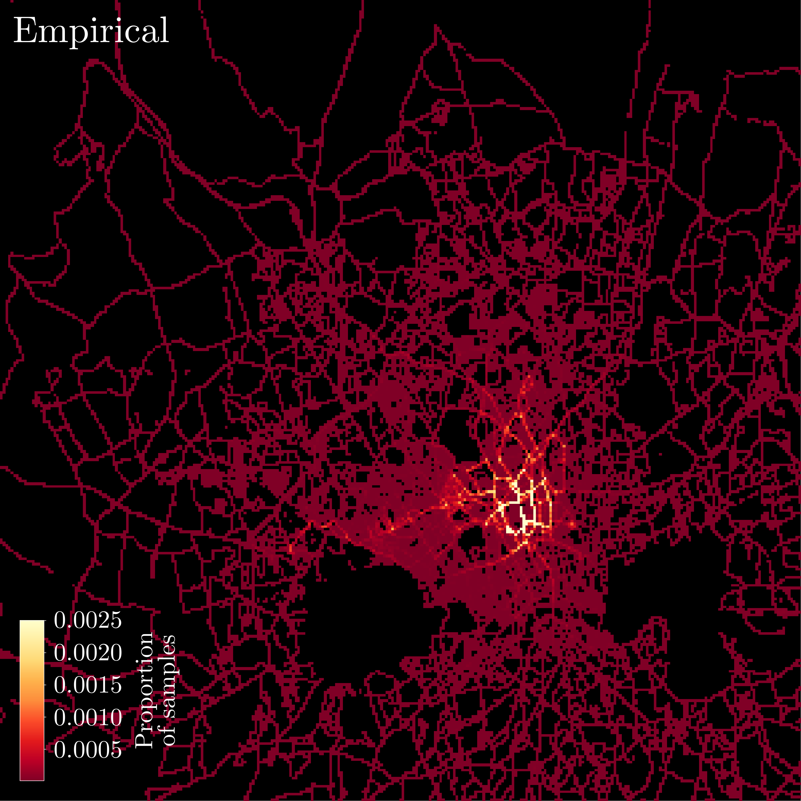
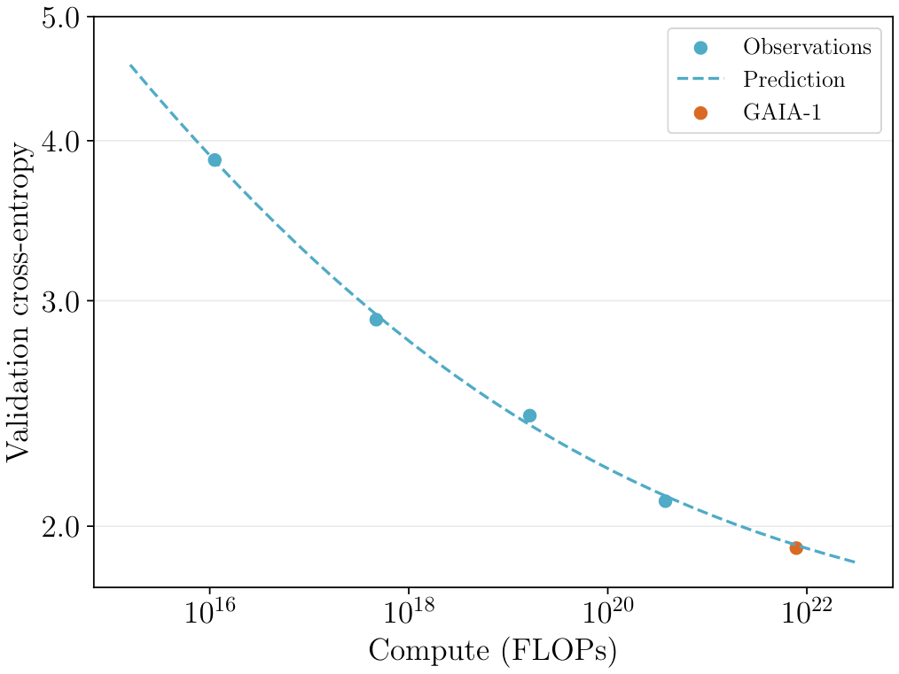
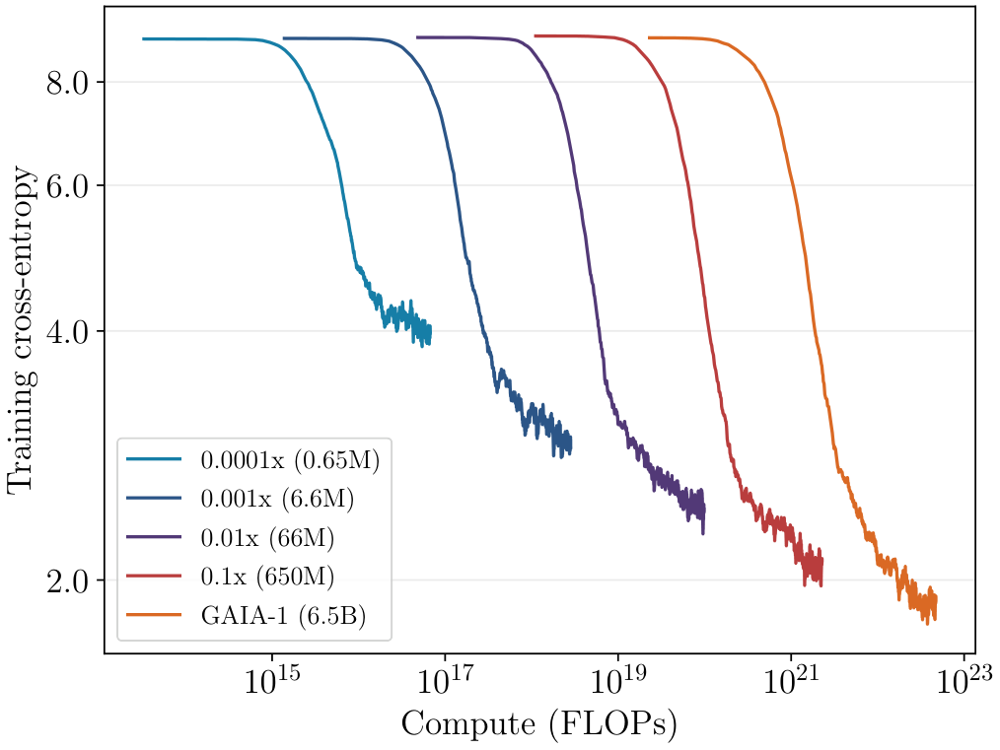
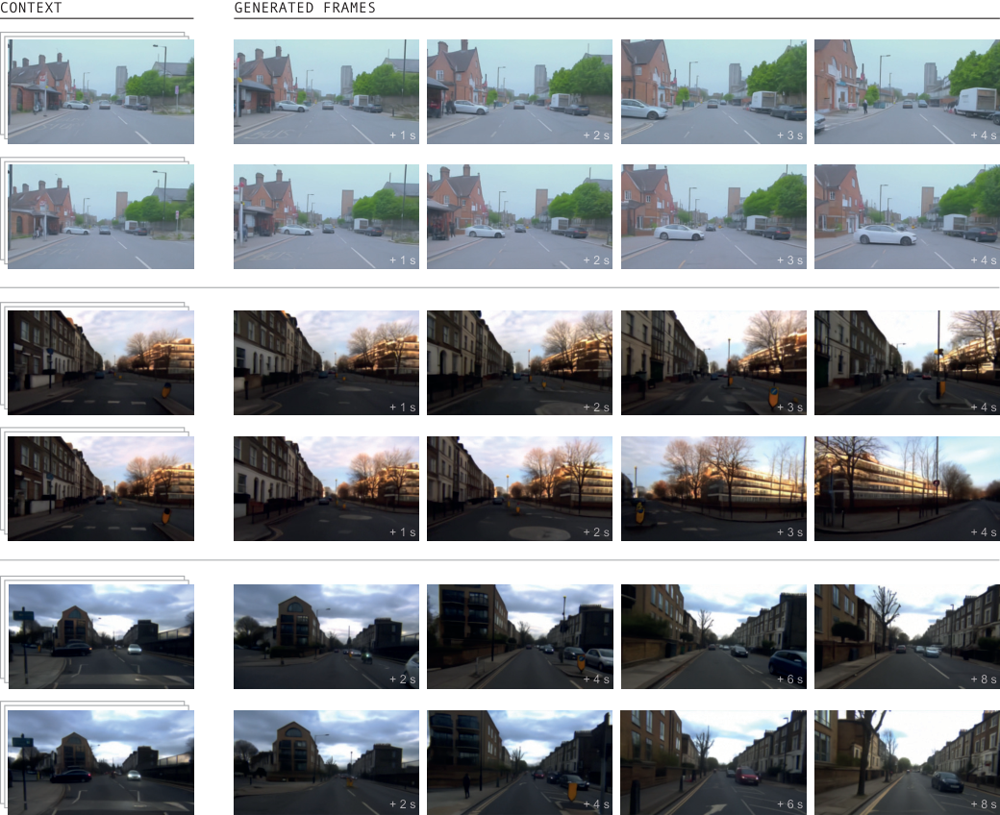
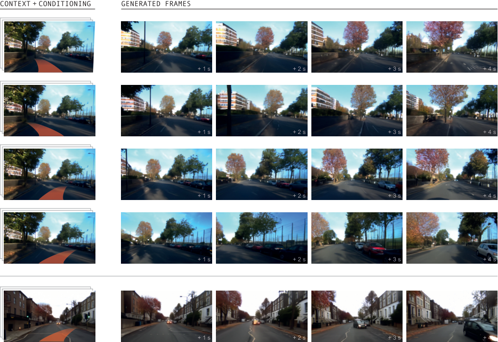

0. 页面头部：论文身份卡片
| 论文 | GAIA-1: A Generative World Model for Autonomous Driving |
|---|---|
| 作者 | Hu, Anthony；Russell, Lloyd；Yeo, Hudson；Murez, Zak；Fedoseev, George；Kendall, Alex；Shotton, Jamie；Corrado, Gianluca |
| 时间 | 2023/09/29 |
| 方向 | Generative world model / video-text-action autoregressive model |
| 核心贡献 | GAIA-1 将视频、文本和动作都编码为 token，用自回归 Transformer 预测未来视觉 token，并通过扩散解码生成可控驾驶视频，从而形成可按动作和文本条件 rollout 的驾驶世界模型。 |
| 模型类型 | 动作与文本条件的生成式驾驶世界模型：在 token 空间自回归预测未来，再用扩散解码器生成视频。 |
| 输入 | 历史视频、ego 动作和可选文本条件。 |
| 中间表示 | 视频、文本和动作分别 token 化；自回归 Transformer 预测未来图像 token；扩散视频解码器恢复像素帧。 |
| 输出 | 一个或多个受动作/文本控制的未来驾驶视频。 |
| 训练目标 | 世界模型做 next-token prediction，视频解码器做条件扩散去噪，并对数据分布进行平衡采样。 |
| 代码与复现状态 | 否，技术报告与演示公开，完整数据/代码未公开；高：世界模型主线代表，适合作为 DriveDreamer/Drive-WM 对照 |
1. 论文速览：用一页讲清楚价值
1.1 一句话贡献
GAIA-1 将视频、文本和动作都编码为 token，用自回归 Transformer 预测未来视觉 token，并通过扩散解码生成可控驾驶视频，从而形成可按动作和文本条件 rollout 的驾驶世界模型。
1.2 论文专属关键词
world model、autoregressive transformer、video tokens、action conditioning、text conditioning、diffusion decoder、Wayve、neural simulation
1.3 技术定位
动作与文本条件的生成式驾驶世界模型：在 token 空间自回归预测未来，再用扩散解码器生成视频。
1.4 论文构建了什么
| 输入 | 历史视频、ego 动作和可选文本条件。 |
|---|---|
| 编码与融合 | 视频、文本和动作分别 token 化；自回归 Transformer 预测未来图像 token；扩散视频解码器恢复像素帧。 |
| 输出 | 一个或多个受动作/文本控制的未来驾驶视频。 |
| 训练目标 | 世界模型做 next-token prediction，视频解码器做条件扩散去噪，并对数据分布进行平衡采样。 |
1.5 核心结论与证据链
GAIA-1 是自动驾驶世界模型中的标志性技术报告。它把真实驾驶视频、ego action 和文本描述映射到共同 token 空间，使用 GPT-like autoregressive transformer 预测下一 token，再通过视频 decoder 生成未来帧。模型能从视频 prompt rollout 多种未来，并用 action 控制 ego 行为、用 text 修改天气/场景属性。论文强调 emergent properties：高层结构、场景动态、上下文意识、几何理解和可控生成；但它主要展示生成能力，而不是闭环规划指标。
核心证据来自：动作/文本条件生成、多 plausible future、长视频生成、数据平衡与 scaling 预测实验。。证据边界是：视频清晰和条件可控不等于几何、动力学与碰撞后果准确；论文没有闭环规划成功率。
2. 研究问题与动机：为什么需要这篇论文
2.1 核心问题与成功标准
真实道路未来具有多模态不确定性，纯监督 planner 很难覆盖所有可发生后果。世界模型的理想作用是在行动前模拟“如果我转向/减速会发生什么”。GAIA-1 选择 tokenized autoregressive modeling，是因为它能像语言模型一样在长序列上建模视频、动作和文本条件，利用大规模无标注驾驶视频学习世界动态。
2.2 现有方法的具体不足
该论文针对的瓶颈不是笼统的“泛化不足”，而是：直接像素自回归成本过高；只预测单一未来忽略交通多模态性；token 世界模型与扩散解码分担动态建模和视觉质量。
2.3 为什么不走显而易见的替代路线
直接像素自回归成本过高；只预测单一未来忽略交通多模态性；token 世界模型与扩散解码分担动态建模和视觉质量。
3. 相关工作脉络：这篇论文从哪里来
3.1 技术家族与直接前作
GAIA-1 继承了 Dreamer/MuZero 类世界模型思想，也受 VQ/VAE tokenization、GPT 自回归和 diffusion decoder 影响。相对 DriveGAN/MILE 等早期驾驶生成模型，GAIA-1 强调视频-文本-动作多模态和大模型 scaling。相对 Drive-WM，它是单/前向视角为主的通用 neural simulator，不直接给出现有 E2E planner 的 reward tree 集成。
3.2 本文新意属于表示、架构、训练还是评估
从技术地图看，本文的主要新意可概括为：动作与文本条件的生成式驾驶世界模型：在 token 空间自回归预测未来，再用扩散解码器生成视频。。它并非简单替换 backbone，而是围绕输入表示、中间信息流或评价方式重新定义了论文的核心问题。
4. 方法总览图：先看完整信息流
4.1 主框架图与机制

4.2 信息流一句话串联
输入：历史视频、ego 动作和可选文本条件。；中间处理：视频、文本和动作分别 token 化；自回归 Transformer 预测未来图像 token；扩散视频解码器恢复像素帧。；最终输出：一个或多个受动作/文本控制的未来驾驶视频。；训练约束：世界模型做 next-token prediction，视频解码器做条件扩散去噪，并对数据分布进行平衡采样。
5. 方法详解：输入、表示、融合、解码、训练与部署
5.1 输入表示
历史视频、ego 动作和可选文本条件。。复现时首先要确保各模态的时间同步、坐标系、可见范围与训练时一致；任何一个上游输入偏移都可能被后续大模型放大。
5.2 编码器与融合设计
视频、文本和动作分别 token 化；自回归 Transformer 预测未来图像 token；扩散视频解码器恢复像素帧。
5.3 中间表示为何重要
中间表示决定模型保留何种几何、语义和时间信息。该论文的关键中间链路是：视频、文本和动作分别 token 化；自回归 Transformer 预测未来图像 token；扩散视频解码器恢复像素帧。。它让最终输出能够利用这些信息，但也把上游表示误差带入规划或预测。
5.4 解码、动作生成或未来预测
一个或多个受动作/文本控制的未来驾驶视频。
5.5 训练目标及副作用
世界模型做 next-token prediction，视频解码器做条件扩散去噪，并对数据分布进行平衡采样。。这些目标直接约束对应监督输出，却不会自动保证真实闭环安全、跨域鲁棒性或因果可解释性。
5.6 训练阶段与数据风险
模型分三层：第一，视频 tokenizer 把图像帧离散成 image tokens，并通过 DINO distillation 增强 token 语义一致性；第二，text/action encoder 把文本与控制量映射到共享 embedding；第三，自回归 world model 预测未来 image tokens。解码阶段使用 video diffusion decoder，根据预测 token 和上下文生成高分辨率视频。训练目标本质是无监督序列建模，使用大规模真实英国城市驾驶数据。
5.7 推理与部署流程
用于未来想象与数据生成，不直接输出可执行规划；若用于控制还需要奖励、轨迹选择和安全验证。
6. 原论文图解：逐图拆解证据含义
7.1 Figure 1：GAIA-1 multimodal video generation. GAIA-1 can generate vide
7.2 Figure 2：Architecture of GAIA-1. First, we encode information from al

7.3 Figure 5：Data sampling. The top row shows the empirical distribution




7.4 Figure 8：The final performance of the GAIA-1 world model could be pre


7.5 Figure 11：Examples of multiple plausible futures predicted by the worl

7.6 Figure 13：The world model can predict different outcomes conditioned o

7. 实验与结果：把证据链拆开
7.1 数据集、任务与划分
实验围绕该论文的技术定位组织：动作与文本条件的生成式驾驶世界模型：在 token 空间自回归预测未来，再用扩散解码器生成视频。。需要特别区分离线预测、生成质量、开环规划与真实/仿真闭环，因为它们使用不同成功标准；本论文主要证据为：动作/文本条件生成、多 plausible future、长视频生成、数据平衡与 scaling 预测实验。
7.2 Baseline 为什么重要
论文的比较应围绕其技术定位理解：动作与文本条件的生成式驾驶世界模型：在 token 空间自回归预测未来，再用扩散解码器生成视频。。强 baseline 用来判断收益来自新增信息流、模型容量还是评估协议；仅与较弱旧方法比较不足以证明论文主张。
7.3 指标如何对应论文主张
本文实验所依赖的证据为：动作/文本条件生成、多 plausible future、长视频生成、数据平衡与 scaling 预测实验。。离线预测误差、生成质量、规划指标或闭环分数各自只衡量部分能力，不能互相替代。
7.4 主结果与机制是否一致
论文主要通过定性 rollout、action/text controllability、token 语义可视化和 decoder 任务展示能力。Figure 3 显示 DINO distillation 后同类语义区域 token embedding 更一致；Figure 4 展示 decoder 支持未来预测、插值和修复等训练任务。证据能说明模型学到一定场景结构和可控生成，但不能证明生成视频可直接用于安全规划；也缺少 nuScenes/CARLA 类可复现 open-loop/closed-loop 指标。
8. 消融、失败案例与证据缺口
8.1 消融实验应回答什么
最关键的消融需要隔离该论文的核心信息流：动作/文本条件生成、多 plausible future、长视频生成、数据平衡与 scaling 预测实验。。如果去掉核心模块后只在部分指标下降，需要进一步判断收益是否集中于特定场景。
8.2 失败案例与证据缺口
视频清晰和条件可控不等于几何、动力学与碰撞后果准确；论文没有闭环规划成功率。
8.3 论文没有证明什么
现有结果不能直接推出：视频清晰和条件可控不等于几何、动力学与碰撞后果准确；论文没有闭环规划成功率。
9. 复现要点：真正动手会遇到什么
9.1 最小可行复现路线
完整复现需要大规模真实驾驶视频、动作日志、文本条件、image tokenizer、AR transformer 和 diffusion decoder，成本极高。学术最小复现可在 nuScenes/BBD100K 上做小规模 tokenized video prediction：先训练 VQ tokenizer，再训练 action-conditioned transformer，最后用轻量 decoder 重建帧。阻塞点是数据规模、tokenizer 质量、长视频训练稳定性和生成评估指标。验收标准应是 FVD/FID、action controllability 和多未来一致性，而不是只看单张漂亮图。
9.2 数据、模型、硬件与阻塞点
数据与接口重点：历史视频、ego 动作和可选文本条件。。模型重点：视频、文本和动作分别 token 化；自回归 Transformer 预测未来图像 token；扩散视频解码器恢复像素帧。。部署重点：用于未来想象与数据生成，不直接输出可执行规划；若用于控制还需要奖励、轨迹选择和安全验证。。论文未明确披露的硬件与训练成本不在此推测。
9.3 验收标准
复现成功不应只以脚本运行结束为标准，而应至少复现论文核心趋势：动作/文本条件生成、多 plausible future、长视频生成、数据平衡与 scaling 预测实验。；同时检查输出是否在论文声称的边界外快速退化。
10. 分析、局限与边界：作者没说完的部分
10.1 最有价值贡献
GAIA-1 的价值是提出“驾驶世界模型可以像 GPT 一样扩展”的想象空间。它的边界是非常清楚的：生成 plausible video 不等于物理正确，不等于可验证安全，更不等于闭环驾驶策略。后续研究需要把世界模型与 planner reward、occupancy/BEV 结构和安全验证结合，Drive-WM、DriveDreamer、OccWorld 都是在不同表示空间中沿这个方向前进。
10.2 主张—证据—充分性
| 论文主张 | 动作与文本条件的生成式驾驶世界模型：在 token 空间自回归预测未来，再用扩散解码器生成视频。 |
|---|---|
| 支撑证据 | 动作/文本条件生成、多 plausible future、长视频生成、数据平衡与 scaling 预测实验。 |
| 充分性判断 | 对论文评测范围内的机制结论较有支持；对真实闭环、跨域或安全泛化仍不足。 |
| 原因 | 视频清晰和条件可控不等于几何、动力学与碰撞后果准确；论文没有闭环规划成功率。 |
10.3 可行改进方向
加入 3D occupancy/深度一致性；用规划器选择反事实 rollout；评估长时预测中交通规则与几何漂移。
10.4 后续实验建议
| 核心模块去除/替换 | 隔离论文主张，观察核心指标是否按预期下降 |
|---|---|
| 跨域或扰动测试 | 检查方法是否依赖训练分布和干净输入 |
| 闭环 rollout | 观察误差累积、碰撞与恢复 |
| 不确定性/安全验证 | 识别高风险预测并建立 fallback |
11. 组会问答准备
Q: GAIA-1 为什么使用离散 token？
A: 离散 token 使视频、文本、动作可以放入统一自回归序列，借用 GPT 式下一 token 预测。
Q: 动作条件起什么作用？
A: 它允许同一视频 prompt 在不同 ego action 下 rollout 不同未来，形成可控模拟。
Q: DINO distillation 为什么重要？
A: 它让 image tokens 更有语义一致性，同类区域 embedding 更接近，利于 world model 学结构。
Q: GAIA-1 是否能直接规划？
A: 论文主要展示生成和可控性，没有充分给出现有 planner 上的安全提升指标。
Q: 复现最大难点？
A: 大规模真实驾驶视频和训练成本，以及高质量 tokenizer/decoder 的联合工程。
12. 我的阅读笔记：转成自己的研究素材
12.1 最值得借鉴的点
GAIA-1 适合作为世界模型总纲：tokenized AR + diffusion decoder。与 Drive-WM/DriveDreamer/OccWorld 对比时应强调表示差异：像素视频、结构条件、多视角、3D occupancy。
12.2 与同目录论文的比较钩子
可从“语言是否直接影响动作、是否显式预测未来世界、是否真实闭环、是否保留 3D 几何、是否使用 agent/tool/memory”五条轴与同目录论文比较。本文的定位为：动作与文本条件的生成式驾驶世界模型：在 token 空间自回归预测未来，再用扩散解码器生成视频。
12.3 可行动创新点
加入 3D occupancy/深度一致性；用规划器选择反事实 rollout；评估长时预测中交通规则与几何漂移。
13. 附录图解与证据索引
本文使用的原始图件均来自 arXiv 源码，图注保留或准确转述。其他附录图未被机械堆入页面；只有能够解释方法、结果、消融或失败的图件才被选择。